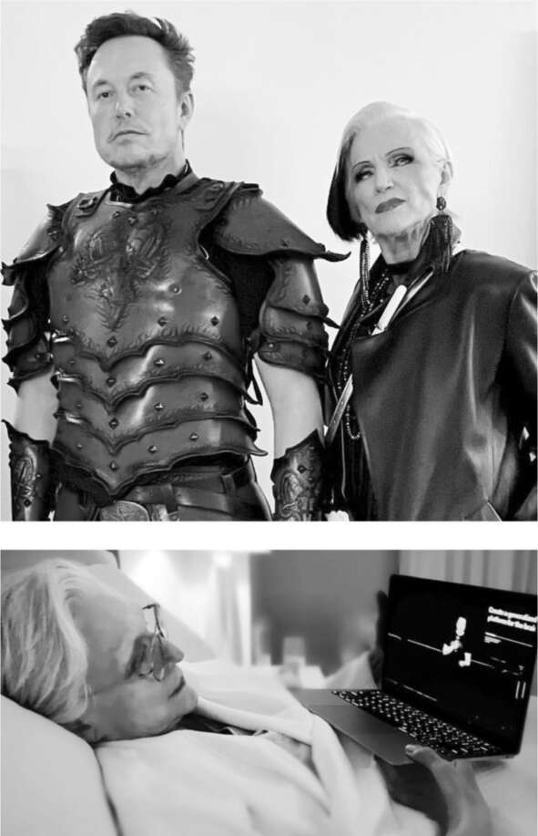

Chuyến thăm New York
Khi mối quan hệ của Yoel Roth với Musk dường như đang diễn ra tốt đẹp một cách đáng ngạc nhiên, thì vào cuối buổi sáng Chủ nhật, ngày 30 tháng 10, chồng anh quay sang hỏi: “Cái quái gì thế này?”. Câu hỏi này khiến Roth nhớ lại thời Trump, khi mỗi sáng thức dậy, anh đều phải chuẩn bị tinh thần cho những gì được đăng trên Twitter. Trong trường hợp này, đó là một tweet của Musk về vụ một kẻ đột nhập cầm búa tấn công Paul Pelosi, người chồng 82 tuổi của Chủ tịch Hạ viện. Hillary Clinton đã đăng một tweet đổ lỗi cho những người “lan truyền thù hận và thuyết âm mưu điên rồ” về vụ bạo lực này. Musk đáp trả bằng cách liên kết đến một trang web âm mưu cánh hữu, nơi đưa ra gợi ý sai lệch, không có bằng chứng, rằng Pelosi có thể đã bị thương “trong một cuộc tranh cãi với một nam mại dâm.” Musk bình luận: “Có một khả năng nhỏ là câu chuyện này có nhiều điều hơn những gì chúng ta thấy.”
Tweet của Musk cho thấy xu hướng ngày càng tăng của ông (giống như cha mình) trong việc đọc các trang web tin tức giả mạo, lan truyền thuyết âm mưu, một vấn đề mà Twitter đã phóng đại. Ông nhanh chóng xóa tweet, xin lỗi và sau đó nói riêng rằng đó là một trong những sai lầm ngớ ngẩn nhất của mình. Đó cũng là một sai lầm đắt giá. “Chắc chắn đây sẽ là một vấn đề với các nhà quảng cáo,” Roth nhắn tin cho Alex Spiro.
Musk đã bắt đầu nhận ra rằng việc tạo ra một môi trường tốt cho các nhà quảng cáo mâu thuẫn với kế hoạch mở rộng phạm vi ngôn luận tự do hơn của ông. Vài ngày trước đó, ông đã viết một bức thư “Gửi các nhà quảng cáo trên Twitter” hứa hẹn, “Rõ ràng Twitter không thể trở thành một địa ngục tự do, nơi bất cứ điều gì cũng có thể được nói mà không có hậu quả!” Nhưng tweet về Paul Pelosi của ông đã làm suy yếu lời cam kết đó bằng cách minh họa điều mà các nhà quảng cáo không thích về Twitter: nó có thể là một bể chứa của những thông tin sai lệch và thông tin bị thao túng mà mọi người (bao gồm cả Musk) lan truyền một cách bốc đồng và liều lĩnh. Quảng cáo chiếm 90% doanh thu của Twitter. Nó đã giảm do suy thoái quảng cáo, nhưng sau khi Musk tiếp quản, nó bắt đầu giảm nhanh hơn nhiều. Nó sẽ giảm hơn một nửa trong sáu tháng tới.
Cuối đêm Chủ nhật đó, Musk bay đến Thành phố New York để gặp gỡ đội ngũ bán quảng cáo của Twitter và cố gắng trấn an các nhà quảng cáo và đại lý của họ. Ông mang theo X, và họ đến căn hộ của Maye ở Greenwich Village vào khoảng 3 giờ sáng. Ông không thích ở khách sạn hoặc ở một mình. Sáng hôm sau, cả Maye và X đều đi cùng ông đến trụ sở chính của Twitter ở Manhattan, đóng vai trò như lá chắn và người đồng hành hỗ trợ tinh thần cho những cuộc họp căng thẳng sắp diễn ra.
Musk có trực giác tốt về kỹ thuật, nhưng mạng lưới thần kinh của anh ấy lại gặp khó khăn khi xử lý cảm xúc con người, và đó chính là nguyên nhân khiến việc mua lại Twitter trở thành một vấn đề. Anh ấy coi Twitter là một công ty công nghệ, trong khi thực tế nó là một phương tiện quảng cáo dựa trên cảm xúc và mối quan hệ giữa người với người. Anh ấy biết mình cần phải mềm mỏng trong chuyến đi New York, nhưng anh ấy lại đang tức giận. "Đã có một chiến dịch công kích tôi kể từ khi thương vụ được công bố vào tháng Tư," anh ấy nói với tôi. "Các nhóm hoạt động đã gây sức ép để ngăn các nhà quảng cáo ký hợp đồng."
Các cuộc họp hôm thứ Hai đó chẳng giúp trấn an các nhà quảng cáo là bao. Trong khi mẹ anh ấy theo dõi và X chơi đùa, Musk nói chuyện đều đều, gần như vô cảm, đầu tiên là với đội ngũ bán hàng của mình, sau đó là trong các cuộc gọi với cộng đồng quảng cáo. "Tôi muốn Twitter trở nên thú vị đối với nhiều người, có thể một ngày nào đó sẽ đạt một tỷ," anh ấy nói trong một cuộc trò chuyện. "Điều đó đi đôi với sự an toàn. Nếu bạn bị tấn công bằng hàng loạt lời lẽ thù địch hoặc bị công kích, bạn sẽ rời đi." Tại mỗi cuộc họp, anh ấy đều bị hỏi về bài đăng trên Twitter liên quan đến Paul Pelosi. "Tôi là chính tôi," anh ấy nói tại một thời điểm, điều này thực sự không làm yên lòng bất kỳ ai trong số những người đang lắng nghe, những người bằng cách nào đó đã hy vọng khác đi. "Tài khoản Twitter của tôi là một phần mở rộng con người tôi, và, kiểu như, tôi sẽ đăng một số thứ ngu ngốc, và tôi sẽ mắc lỗi." Anh ấy nói điều đó không phải với sự khiêm tốn mà là với sự thờ ơ lạnh lùng. Trong một cuộc gọi Zoom, một số nhà quảng cáo khoanh tay hoặc tắt máy. "Cái quái gì vậy?" một người trong số họ lẩm bẩm. Twitter được cho là một doanh nghiệp tỷ đô, chứ không phải là nơi thể hiện những khuyết điểm và tính khí thất thường của Elon Musk.
Ngày hôm sau, nhiều giám đốc điều hành hàng đầu của Twitter, những người được cộng đồng quảng cáo tin tưởng, đã nghỉ việc hoặc bị sa thải, đáng chú ý nhất là Leslie Berland, Jean-Philippe Maheu và Sarah Personette. Nhiều thương hiệu lớn và các công ty quảng cáo đã tuyên bố ý định tạm dừng quảng cáo trên Twitter hoặc lặng lẽ làm điều đó. Doanh số bán hàng giảm 80% trong tháng. Thông điệp của Musk chuyển từ trấn an sang năn nỉ rồi đến đe dọa. "Doanh thu của Twitter đã giảm mạnh, do các nhóm hoạt động gây sức ép lên các nhà quảng cáo, mặc dù không có gì thay đổi về kiểm duyệt nội dung và chúng tôi đã làm mọi thứ có thể để xoa dịu họ," anh ấy đã tweet sau các cuộc họp. "Họ đang cố gắng phá hủy quyền tự do ngôn luận ở Mỹ."
Chỉ huy không gian
Halloween là một trong những ngày lễ yêu thích của Musk, một cơ hội cho các trò chơi nhập vai nghiêm túc. Một lý do khác khiến anh ấy bay đến New York, ngoài việc xoa dịu các nhà quảng cáo, là anh ấy đã hứa sẽ cùng mẹ đến dự tiệc Halloween thường niên của người mẫu Heidi Klum, nơi có những bộ trang phục lộng lẫy được trình diễn trên thảm đỏ để làm hài lòng các tay săn ảnh.
Musk mãi đến 9 giờ tối mới quay lại căn hộ của Maye sau các cuộc họp quảng cáo, lúc đó bà và một người bạn đã giúp anh ấy mặc vào bộ trang phục "chiến binh quỷ" bằng da đỏ đen mà bà đã chuẩn bị. Mặc dù được đưa vào khu vực VIP, họ ghét bữa tiệc. Maye thấy nó quá ồn ào, còn Elon thì khó chịu vì mọi người cứ cố gắng chụp ảnh tự sướng với anh ấy. Vì vậy, họ đã rời đi sau mười phút. Nhưng Musk đã thay đổi ảnh đại diện Twitter của mình thành ảnh anh ấy trong bộ giáp chiến binh quỷ. Anh ấy nghĩ nó phù hợp với tình hình hiện tại của mình.
Sáng hôm sau, ông dậy sớm để cùng mẹ và con trai xem trực tiếp cảnh phóng tên lửa Falcon Heavy, lần đầu tiên sau ba năm SpaceX phóng tên lửa 27 động cơ này. Sau đó, ông bay tới Washington để tham dự lễ chuyển giao chức vụ tướng lĩnh cấp cao tại Bộ Tư lệnh Không gian Hoa Kỳ. Mặc dù có những căng thẳng với chính quyền Biden, Musk vẫn được Lầu Năm Góc nồng nhiệt đón tiếp, đặc biệt vì SpaceX là đơn vị Mỹ duy nhất có khả năng đưa các vệ tinh quân sự và phi hành đoàn lớn lên quỹ đạo. Trong buổi lễ, ông được Tướng Mark Milley, Chủ tịch Hội đồng Tham mưu trưởng Liên quân, đặc biệt nhắc đến. "Điều ông ấy tượng trưng", Milley nói, "là sự kết hợp giữa hợp tác dân sự và quân sự, tinh thần đồng đội, điều đã khiến Hoa Kỳ trở thành quốc gia hùng mạnh nhất trong không gian."

Maye ăn mặc cho lễ Halloween 2022 và xem một trong những bài thuyết trình của con trai bà